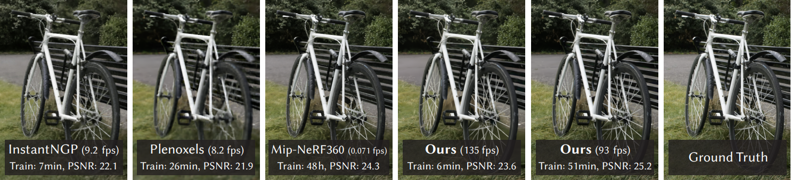

Spectrally Pruned Gaussian Fields with Neural Compensation (SUNDAE) #
*Authors: Yang, Runyi, et al
*Team: Donggeon Lee, Chiho Yoon
Summary #
3D representation, which is the basis for many VR/AR and robotics applications, has long been an area of interest in computer vision and graphics. With the advent of neural radiation fields (NeRFs) Link, several methods have emerged to improve the quality and efficiency of NeRFs.
Conventional 3D Gaussian Splatting (3DGS) #

Fig. 1. Comparison of 3D Gaussian Splatting to previous NeRF technologies.
One of the recent hot topics in the NeRF field, 3D Gaussian Splatting (3DGS), demonstrates high quality and particularly fast, near real-time rendering speeds (about 100FPS).
- Pros: Superior rendering speed and quality
- Cons: High memory consumption
Proposed SUNDAE #
Fig. 2. Comparison of 3D gaussian splatting and proposed SUNDAE
- It constructs a memory-efficient Gaussian field using spectral pruning and neural compensation.
- It considers the relationship between primitives, reducing memory usage while maintaining rendering quality.
- It significantly reduces memory consumption while preserving high rendering quality.
- Code: https://runyiyang.github.io/projects/SUNDAE/.
Introduction #
Fig. 3. Conceptual illustration of vanilla 3DGS, SUNDAE spectral pruning technique, and neural compensation.
3D Gaussian Splatting (3DGS) Link #
Recently, 3DGS has been proposed as a novel 3D scene representation, utilizing a set of 3D positions, opacity, anisotropic covariance, and spherical harmonic (SH) coefficients to represent a 3D scene (left panel of Fig. 2). 3DGS demonstrates notable advantages in rendering speed, rendering quality, and training time. But it requires a large storage.
Spectral graph pruning #
Gaussian fields utilize a collection of Gaussian primitives as the representation of the scene. As these primitives are irregularly distributed in 3D space, they propose a graph-based data structure, rather than regular structures like grids, to capture the relationship between these primitives (middle panel of Fig. 2).
Neural compensation #
To address an inevitable decrease in rendering quality, they employ a neural compensation head to compensate for this quality loss (right panel of Fig. 2).
Contributions #
- A newly proposed primitive pruning framework for Gaussian fields based upon the spectrum of primitive graphs.
- A novel feature splatting and mixing module to compensate for the performance drop caused by the pruning.
- State-of-the-art results, in terms of both quality and speed, on various benchmarks with low memory footprint.
Methods #
We have 4 steps for the method
- 3D Gaussian Splatting Warm Up
- Spectral Graph Pruning
- Neural Compensation
- Continuous Pruning as a Strategy
The overall framework is in Fig.
Fig. 4. The overall framework of SUNDAE with pipeline and graph-based pruning.
Let’s see how each step works.
1. 3D Gaussian Splatting Warm up #
SUNDAE initialize Gaussian centers of the vanilla 3D Gaussian Splating as the first step for generating a dense representation using Gaussian primitives. Then, an effective densification strategy is used to increase the primitives.
- Gaussian Primitive Initialization #
The point cloud $P_c$ is the first input for representing the 3D scene using Gaussian primitives $P$. Then they turn 3D coordinates $x \in P_c$ into Gaussian primitives $p \in P$ by the following equation:
$p(x)=exp(-1/2(x)^T\Sigma^-1(x))$
where the $\Sigma$ is defined as 3D covariance matrix. They also use an ellipsoid configuration. The decomposition of $\Sigma$ is achieved with scaling matrix $S$ and a rotation matrix $R$, as expressed in the equation:
$\Sigma=RSS^TR^T$
- Gaussian Primitive Densification #
They optimize all parameters of Gaussian primitives and integrate a densification strategy to improve representation power during the training process.
2. Spectral Graph Pruning #
After warm-up, a dense representation incurs significant storage consumption. To efficiently prune redundant primitives, they used the graph signal processing theory and construct a graph based on Gaussian primitives.
- Graph Signal Processing Preliminaries #
Graph shift: Graph shift represents the connections between nodes in a weighted graph, typically represented by a weighted adjacency matrix. It quantitatively describes the relationships between nodes using the weights of edges.
Graph signal: Graph signal is a mapping assigning values to each node in a graph, utilized to model interactions between nodes.
Graph Fourier Transform: Graph Fourier Transform is the process of expanding a graph signal using the eigenbasis of the graph shift, enabling analysis of the structure and interactions within the graph.
- Graph Construction #
Given a set of Gaussian Primitives %P% , they construct a nearest neighbor graph with the adjacent matrix $W$ of the graph:
$$ W_{ij} = \begin{cases} \exp\left( -\frac{\|x_i - x_j\|^2}{2 \sigma^2} \right), & \text{if } \|x_i - x_j\|^2 < \tau \\ 0, & \text{otherwise} \end{cases} $$
where $x_i$ and $x_j$ are central points in $P$, $\tau$ is a hyperparameter, and $\sigma$ is the variance of the distance matrix.
- Graph Filtering and Sampling #
SUNDAE propose a band-limited graph filter that combined with a high-frequency filter and low-frequency filter. By doing this, they can catch both the detailed information and general information. Design of filters are Haar-like.
They also prune the abundant primitives according to the response magnitude of the high-pass filter.
3. Neural Compensation #
There is a decrease in rendering quality for large pruning ratio. To address this, they employ a neural compresation network to model the relationship between primitives in the 2D domain.
They render the 3D Gaussian primitives into neural images in a differentiable manner, using the differentiable 3D Gaussian renderer from 3DGS with feature rendering instead of RGB rendering. The center of each Gaussian primitive is projected using a standard point rendering method, and the covariance in the neural image space is calculated.
The neural image is then computed using the feature vectors of Gaussian primitives. A lightweight neural network (U-Net with skip connections) is used to compensate for the quality drop after spectral pruning.
The overall optimization process is based on the difference between the rendered images and the ground truth images from the dataset. The compensation network and the 3D Gaussian primitives are optimized simultaneously during training, using a loss function that combines L1 loss and D-SSIM loss.
4. Continuous Pruning as a Strategy #
In addition to the training-then-pruning strategy, a continuous pruning strategy is explored. Continuous pruning periodically removes a specific number or percentage of primitives during the training process. This aims to lower peak memory usage and allow training on GPUs with lower memory. However, it can result in less predictable final memory usage, as the reduction may vary across different scenes. Therefore, continuous pruning is considered an alternative strategy when needed.
Results #
Quantitative Results #
Table 1. Quatitative evaluation of SUNDAE.
SUNDAE demonstrates strong performance across various metrics, including PSNR, SSIM, FPS, and memory usage.
- Compared to existing methods on the MipNeRF360 dataset, SUNDAE achieves a balance between rendering quality and efficiency, maintaining high FPS rates while significantly reducing memory consumption.
- Even at low sampling rates, SUNDAE remains competitive with established approaches, showcasing the effectiveness of its spectral pruning and neural compensation techniques in managing Gaussian primitive relationships and retaining scene information.
- Overall, SUNDAE represents scenes more compactly while maintaining high quality rendering.
Qualitative Results #
Fig5. Qualitative results of SUNDAE.
The qualitative results demonstrate that SUNDAE achieves comparable novel view synthesis quality with significantly lower memory consumption (1% or 10%).
- The graph effectively captures primitive relationships, while the neural compensation head preserves rendering quality.
- Spectral pruning notably removes outliers near the camera, enhancing scene coherence.
Ablation Study #
Fig6. Ablations experiment on the ratio ùõæ of the bandlimited filter of graph based pruning.
- Band-limited ratio of Graph-based pruning:
- The band-limited filter’s ratio, represented by ùõæ, significantly impacts rendering quality, with a ùõæ value of 50% yielding the most favorable outcomes, emphasizing the advantage of spectral pruning in preserving important high-frequency details and low-frequency background (Fig. 4).
Table 2. Ablations of neural compensation module size.
Fig. 7. Visualization with and without neural compensation.
- The compensation performance of the network:
- Employing the neural compensation module enhances performance across all sampling rates evide(Table 2, Fig. 5), highlighting its compensatory capability in mitigating performance drops caused by spectral pruning and effectively modeling the relationship between primitives.
- Neural Compensation Module Size:
- Increasing the size of the neural compensation module does not necessarily enhance rendering quality (Table 2), aligning with findings from ADOP and indicating a balance between quality and memory usage.
Conclusion #
- They propose SUNDAE, a novel approach to spectrally prune Gaussian fields with neural compensation, efficiently capturing the relationship between Gaussian primitives using graph signal processing and blending information to offset pruning-induced information loss.
- By leveraging spatial information among Gaussian primitives to construct a graph and spectrally pruning less significant ones, they employ a lightweight neural network to compensate for quality degradation post-pruning.
- Experimental findings demonstrate SUNDAE’s ability to maintain the efficiency of 3DGS while significantly reducing its size across various scenarios.